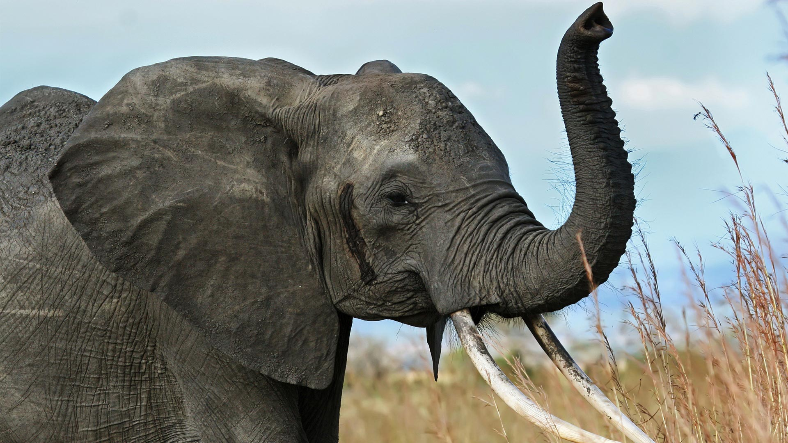
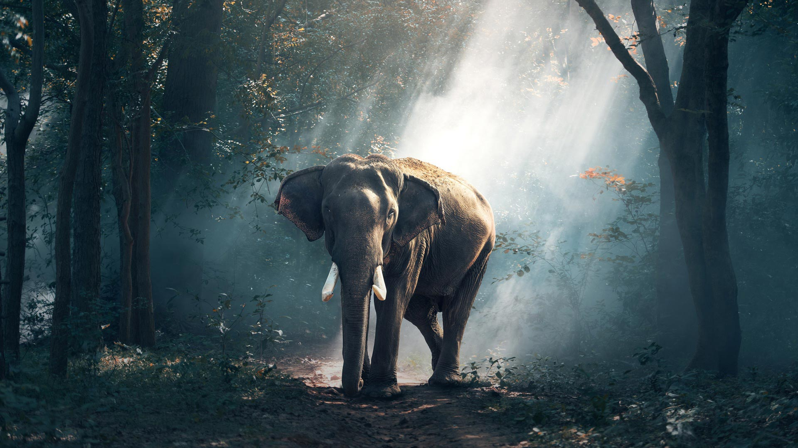

Afrikai elefánt
Kettő genetikailag különböző afrikai elefánt faj létezik: a szavannai elefánt és az erdei elefánt. Számos olyan jellemzővel rendelkeznek, amelyekkel könnyedén megkülönböztethetjük a kettőt egymástól, például az afrikai szavannaelefánt a legnagyobb elefántfaj, míg az ázsiai elefánt és az afrikai erdei elefánt hasonló, kisebb méretű.
Ázsiai elefánt
Az ázsiai elefántok* több szempontból is különböznek afrikai rokonaiktól, több mint 10 különböző fizikai különbség van közöttük. Az ázsiai elefántok füle például kisebb, mint az afrikai fajok nagy, legyező alakú füle. Csak néhány hím ázsiai elefántnak van agyara, míg az afrikai elefántoknál mind a hímeknek, mind a nőstényeknek van agyara.
*ázsiai elefánt: Magyarul sokszor hívják indiai elefántnak is. Ez azonban félrevezető, mert nem csak Indiában fordul elő az állat. Az indiai elefánt csak az Indiában honos alfajára értendő, ha az egész fajra gondolunk, akkor az ázsiai elefánt a helyes név.
A Csorda
A matriarcháta* vezetésével a nőstények és borjak összetett társadalmi struktúrákban élnek, míg a hím elefántok általában elszigetelten vagy kisebb „legényes” csoportokban élnek. Ez a matriarcháta általában a legidősebb - hiszen ő a legtapasztaltabb - a csordában, ez általában a utódjaiból és azok saját utódaiból áll, főbb feladatai közé tartozik hogy megvédje a csordát bármiféle betolakodótól, illetve az is hogy elvezesse utódjait a szükséges vízhez és élelemhez. Egy nősténynek négy-ötévente egyszer születik borjúja, a 22 hónapos vemhességi időszak után – ezáltal az emlősök között elefántoké a lehosszabb vemhességi idő rekordja. A borjakról a rokon nőstények egész csordája együtt gondoskodik. A nőstény borjak életük végéig az anyai csordával maradhatnak, a hímek a serdülőkor elérésekor elhagyják a csordát. Az erdei elefántok csoportjai némileg eltérnek egymástól, és előfordul, hogy csak egy felnőtt nőstényből és utódaiból állnak. Az erdei tisztásokon azonban, ahol az erőforrások bőségesebbek, nagyobb csoportokba tömörülhetnek.
*matriarcháta: vezető / matriarchátus: Anyajogú társadalom , ahol a nőknek van vezető szerepük.
Táplálkozásuk
Az elefántoknak a túléléshez és az ökológiai szükségleteik kielégítéséhez - beleértve a táplálékot, a vizet, a pihenő és bőrüket védő sár lelőhelyet- kiterjedt területekre van szükségük. Egy elefánt átlagosan akár 18 órán át is képes táplálkozni, és több száz kilónyi növényi anyagot is elfogyaszt egy nap alatt. Ennek következtében, ahogyan elveszítik élőhelyüket, gyakran kerülnek konfliktusba az emberekkel az erőforrásokért folytatott versenyben.

(Elefántok migrációja)

Populáció
Eredmények
| Elefántfajok | Népesség (legutóbbi becslés) | Kihalás kockázata | Népesedési tendencia |
|---|---|---|---|
| Ázsiai elefánt (Elephas maximus) |
≤50,000 | Veszélyeztett | Csökkenő |
| Afrikai elefánt | ≤415,000 | Alább | Alább |
| Afrikai erdei elefánt (Loxodonta cyclotis) |
^ | Kritikusan veszélyeztett | Csökkenő |
| Afrikai szavannai elefánt (Loxodonta africana) |
^ | Veszélyeztett | Csökkenő |
⠀
- A mai elefánt népességi tendencia sajnos csökkenő, méghozzá a tetemek aránya* Afrika
egészében 11,9% volt. Ez azt jelenti, hogy 100 élő elefántra átlagosan körülbelül 12
elpusztult elefánt jutott.
(8% feletti értéktől számít egy faj veszélyeztetettnek) - 1500-ban több mint 25 millió elefánt élt Afrikában. Ez a szám 1900-ra körülbelül 10 millióra, 1979-re pedig 1,3 millióra csökkent.
- Ha az utóbbi 100 év csökkenési indexét vesszük figyelembe (gyorsuló esési index: ~3.105; vagyis évente kb. hárommal keveseb állat születik mint ahány elpusztult) azt jeleneti, hogy ha nem változtatunk a jelenlegi állapoton az összes elefánt végleg fog kihalni a következő 400 éven belül, ha nem hamarabb.
|
Ha a következő képletet használjuk, megtudhatjuk 't' év alatt hogyan változna a populáció a mai helyzet alapján: |
|
Fennamaradó populáció: